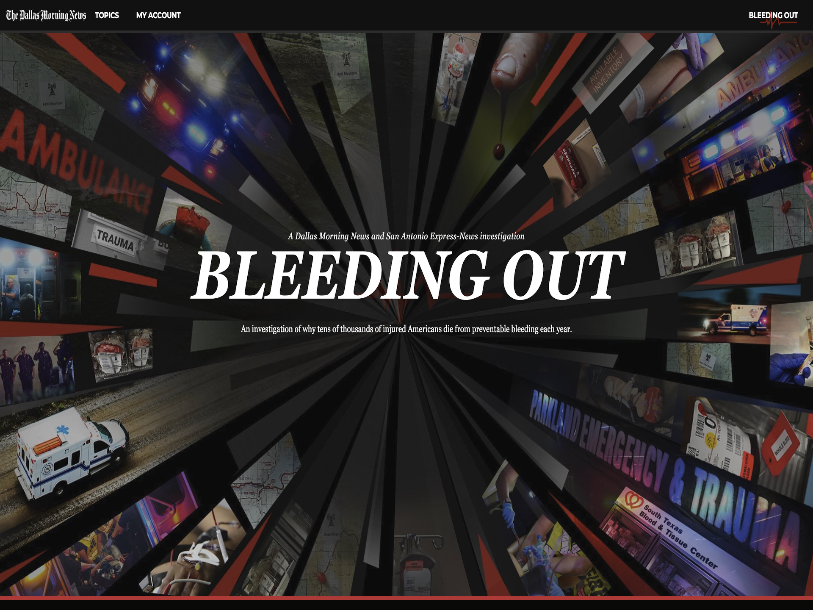
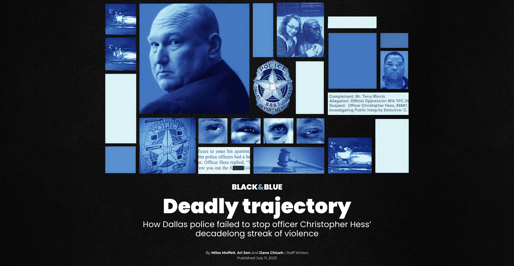

Selected Work
Investigations and data-driven stories across policing, technology, public health and government accountability.
Featured Investigations
CBS News · 2026
Moonlighting
How police departments' loosely-written rules enable off-duty misconduct

The Dallas Morning News · 2023
Bleeding Out
Trauma deserts in rural America — where you live can determine whether you live

The Dallas Morning News · 2023
Black & Blue
Inside the investigation into Officer Hess' streak of police brutality
The Dallas Morning News · 2022
Tracked
How colleges and K-12 schools use AI to surveil students — often without their knowledge or consent
Scientific American
CBS News
2026
Moonlighting: How police departments' loosely-written rules enable off-duty misconduct
→
2025
Baltimore's vacant rowhomes: The danger and the plan to reach functional zero
→
2025
Auto loan delinquencies have surged more than 50% in 15 years
→
2025
What the newly released RFK assassination files reveal
→
2025
How Trump tariffs on Canada could affect gas prices
→
2024
Ransomware attacks on schools threaten student data nationwide
→
The Dallas Morning News
2023
Bleeding Out: Trauma deserts in rural America — where you live can determine whether you live
→
2023
New Texas law requires overdoses be mapped. Will this data help Dallas fight fentanyl?
→
2023
Black & Blue: Inside the investigation into Officer Hess' streak of police brutality
→
2022
The Black Box: Colleges spend thousands on AI to prevent suicides and shootings. Evidence that it works is scant.
→
2022
Tracked: How colleges use AI to monitor student protests
→
2022
Uvalde CISD purchased social media monitoring service years before shooting
→
2021
Prison gerrymandering: How inmates are helping the Texas GOP maintain its power
→
NBC News
2020
QAnon groups have millions of members on Facebook, documents show
→
2019
Senior Trump official embellished résumé, had face on fake Time magazine cover
→
2019
Senior Trump admin official Mina Chang resigns after NBC News investigation
→
2019
Sondland backed effort to shake up leadership at Ukraine's state energy company
→
2019
UNC campus police used geofencing tech to monitor antiracism protestors
→
2019
Hunter Biden's legal work in Romania raises new questions about potential conflicts
→
2019
How did Mina Chang get the State Department job in the first place?
→
More stories at Dallas Morning News and Scientific American